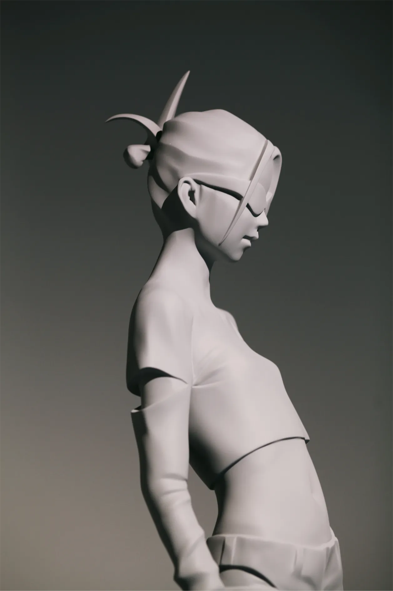

菅原 玄奨
360度、どこから見るのか
光の入り方で、なんなら影の姿まで違って
一つの作品でいろいろな表情がある
「立体物ってめっちゃおもしろいな…」
と思うようになったきっかけの作家さんです
まだ岩手に住んでいたころ、
旅行中にグループ展で初めて作品をみたのですが
実物の作品の姿があまりにも格好よくて
刺さりすぎて、忘れられず、
「これは夜の姿も絶対見たい…」と
別日に時間を変えて再度見に行ったほどでした
言葉にするとシンプルすぎるのですが
玄奨さんの作品は自分にとって
まさに｢絶妙｣なんですよね…
まず、自分自身が「灰色」という
様々な意味での「中間」の色や存在に
重きを置いている、というのもあるのですが
｢存在しているけど、存在していない｣
「ここだけど、どこでもない」
｢他人だけど、自分でもある｣
みたいな
自分の中にあるそれらの感覚を
実存とした場合、
こんな色や形になるかも、という感じがするのです
そしてとにかく、触ってみたくなる 笑
今まで個展でみてきた玄奨さんの作品を
ほんとうに何回見返したのか分からないくらい
定期的に見返しているんですけど
とにかく質感が、たまらないのです
つるつる以外にも、のっぺりとした感じ、
粒っぽいのとか、ザラっとした強い手触りを感じるもの
作品によって色んな質感がある
けど、作品だから実際には触れないんですよ 笑
でもなんだかそれも含めて好きなんですよね
実際には触れない物の触り心地を
「想像する」というその感覚も
玄奨さんの作品から生じる面白さのひとつとして
魅力的に感じている部分です
あと個人的にはSF好きとして
公共の場に置かれた玄奨さんの作品が
もっとずっと遠い未来、人類が滅びた後も
そこに在り続けていく、という想像をしたりして
めっちゃいいなあと思ったりしています
写真でも作品のかっこよさは
十分伝わるかもしれないんですが
是非、己の目で実際に作品を見て
色々な要素を体感してほしい、と
強く思う作家さんです
生きているうちにできるだけたくさん
玄奨さんの作品をみてから死にたいもんですな
